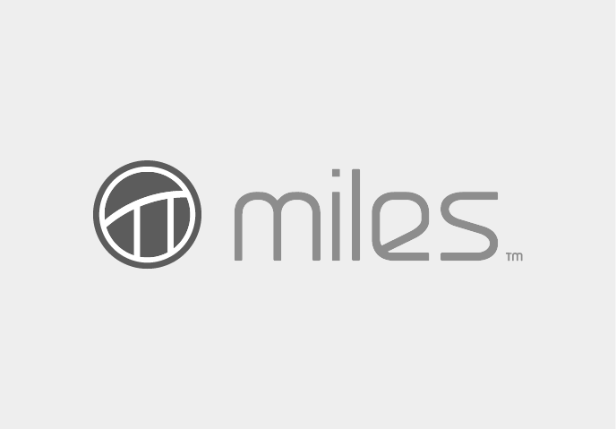

THANKS TO ALL OUR SPONSORS LAST YEAR


- 

All attendees, speakers, sponsors and volunteers at our conference are required to agree with the following code of conduct. Organisers will enforce this code throughout the event. We are expecting cooperation from all participants to help ensuring a safe environment for everybody.
If you are being harassed, notice that someone else is being harassed, or have any other concerns, please contact a member of conference staff. Conference staff will be wearing "flatMap(Oslo)" t-shirts, and "Crew"-badges. You can also get in touch with us at flatmap@arktekk.no
Our conference is dedicated to providing a harassment-free conference experience for everyone, regardless of gender, age, sexual orientation, disability, physical appearance, body size, race, or religion. We do not tolerate harassment of conference participants in any form. Sexual language and imagery is not appropriate for any conference venue, including talks, workshops, parties, Twitter and other online media. Conference participants violating these rules may be sanctioned or expelled from the conference without a refund at the discretion of the conference organisers.
Harassment includes offensive verbal comments related to gender, sexual orientation, disability, physical appearance, body size, race, religion, sexual images in public spaces, deliberate intimidation, stalking, following, harassing photography or recording, sustained disruption of talks or other events, inappropriate physical contact, and unwelcome sexual attention.
Participants asked to stop any harassing behavior are expected to comply immediately.
Sponsors are also subject to the anti-harassment policy. In particular, sponsors should not use sexualised images, activities, or other material. Booth staff (including volunteers) should not use sexualised clothing/uniforms/costumes, or otherwise create a sexualised environment.
If a participant engages in harassing behavior, the conference organisers may take any action they deem appropriate, including warning the offender or expulsion from the conference with no refund.
If you are being harassed, notice that someone else is being harassed, or have any other concerns, please contact a member of conference staff immediately. Conference staff can be identified as they'll be wearing branded t-shirts.
Conference staff will be happy to help participants contact hotel/venue security or local law enforcement, provide escorts, or otherwise assist those experiencing harassment to feel safe for the duration of the conference. We value your attendance.
We expect participants to follow these rules at conference and workshop venues and conference-related social events.
This Code of Conduct was forked from the example policy at http://confcodeofconduct.com/, which is under a Creative Commons Attribution 3.0 Unported License

flatMap(Oslo) - A functional programming conference, with focus on Scala and the Java Virtual Machine.
On the 13th and 14th of May 2013, a group of enthusiasts organised the second flatMap(Oslo) conference. It was 2 amazing days. 130 attendees gathered for technical talks, workshops, discussions and craft beer. Feedback was great, and in 2014 we gather again for the 3rd annual flatMap(Oslo). We will make it a little bit bigger, and aim for 200 attendess. This was always our goal, and what we believe is the perfect size for the conference. Big enough to matter, but still intimate. Also, we can't scale past the capacity of our brewery!
flatMap(Oslo) is organised by a group of developers from Arktekk – a small independent consultancy company based in Oslo, Norway. Our financial goal is to break even. Every penny we make will go into making the best possible conference. Together with our awesome sponsors we work hard to give you a conference tailored for enthusiasts of Scala and functional programming on the Java Virtual Machine.
Please read our Code of Conduct
Need to get in touch? Send us an email